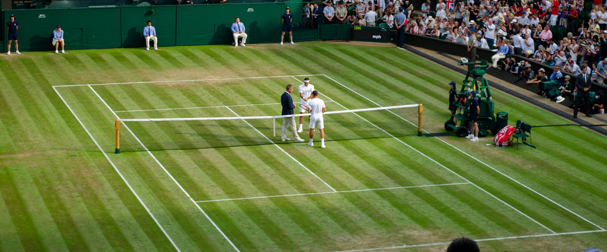
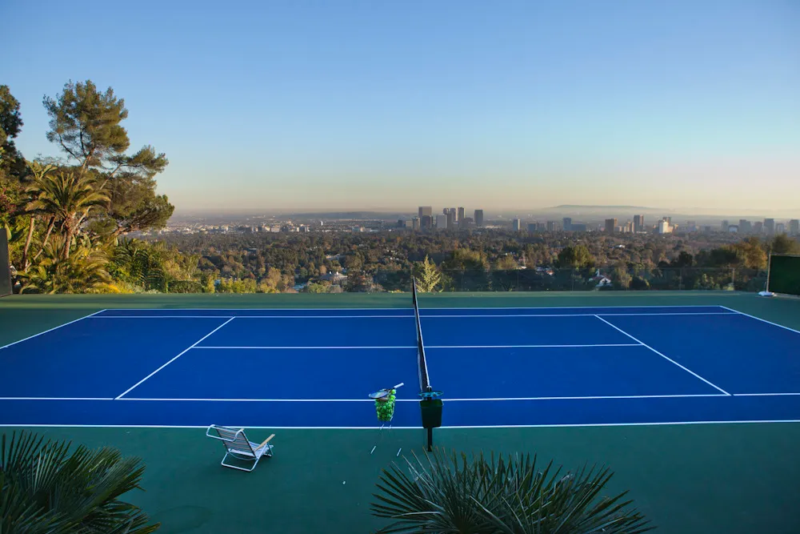

Tennis was originally created around the 12-13th century, and it was inspired based on a French handball game called "jeu de paume." In this French game, the ball was struck with the hand instead of a racuqet. This game was first played by Europmean monks for entertainment. Later, the leather glove came into use. Then a handle was added to the glove, which eventually created the tennis raquet that we know today.
Tennis is played on a rectangular court, with two game styles: singles and doubles. In singles, there are 2 people on a court at once, one person on each side. You are awarded points when your opponent fails to hit the ball back to your side of the court. This can happen if they hit the ball into the net, or outside of the court boundaries. You win a tennis match by getting to a certain number of points before your opponent does. This means there is no time limit to tennis matches, so they will keep going until one person gets the certain amount of points.
